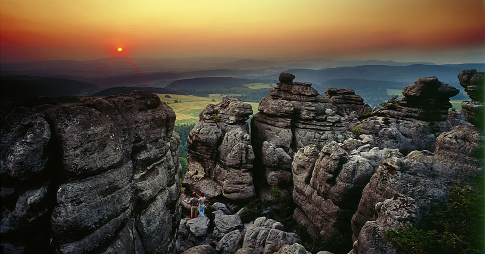

A town on the Czech border with an impressive fortress and Gothic bridge. Gateway to the Sudetes. Slow travel through Kłodzko — one of the most beautiful towns in Lower Silesia.
Why Kłodzko, differently
Kłodzko is one of the most beautiful towns in Lower Silesia, situated in the Nysa Kłodzka valley, surrounded by the hills of the Sudetes. Its history goes back a thousand years, and traces of successive eras — from the Middle Ages to the Baroque — are visible in every corner of the old town. This is a town that for centuries was an important centre of trade and strategy, connecting Silesia with Bohemia.
Slow travel through Kłodzko is a journey through layers of history. Instead of racing from monument to monument, sit on the market square, drink coffee, look at the townhouses. Pay attention to architectural details — portals, coats of arms, sculptures — which tell the story of the town and its residents. Here, in the shadow of old walls, you can truly feel the spirit of Lower Silesia. Kłodzko is a land where history is still present in everyday life.
What to see
Kłodzko is compact — the main sights are within walking distance. One to two days are enough to see it, but it is worth staying longer to feel the atmosphere.
Kłodzko Fortress
- Kłodzko Fortress — one of the largest and best-preserved fortresses in Poland. It rises on a hill above the town, and from its walls a panorama of the entire area opens up. Touring the underground passages and chambers is a journey into the depth of the military history of the region.
- Underground tourist route — a route through a labyrinth of underground passages and chambers, ~600 m long. Worth it for understanding how this enormous structure worked.
- Bastion and walls — the fortress bastions offer the best views over the town and the Nysa Kłodzka valley. Worth climbing at sunset.
- Fortress Museum — an exhibition about the history of the fortress and region. Worth it for understanding the historical context.
Gothic bridge and market square
- Gothic bridge — one of the most beautiful monuments of the town. Built in the 14th century, decorated with Baroque sculptures, it resembles the bridges of Prague and evokes associations with old times.
- Main Market Square — the heart of Kłodzko, surrounded by colorful townhouses. In the centre, the town hall with a distinctive tower. Look at the townhouses — each has a different story.
- Town Hall — a Baroque building from the 16th century, in the centre of the market square. Worth climbing the tower — a view over the whole town and surroundings.
- Church of the Assumption — a Gothic temple from the 14th century, one of the most important in the region. The interior delights with vaults and altars.
- Town Hall tower — a viewpoint over the town and fortress. Worth climbing for the panorama.
Museums and lesser-known corners
- Museum of the Kłodzko Land — an exhibition about the history and culture of the region. Worth it for understanding the context.
- Cellar Under the Lion — a former burgher cellar, today a restaurant. Worth seeing for the architecture.
- Church of St. George — a Gothic church on a hill, one of the oldest monuments of the town.
- Nysa Kłodzka gorge — a river valley near the town, with picturesque meanders. Worth a walk and contact with nature.
- City Park — a park in the town centre, with alleys and old trees. Worth a walk.
Surroundings (day trips)
- Bystrzyca Kłodzka — a small town with a Gothic layout, ~20 km from Kłodzko. Worth it for architecture and atmosphere.
- Lądek-Zdrój — a spa with a mineral water pump room, ~20 km from Kłodzko. Worth a walk.
- Polanica-Zdrój — a smaller spa with a health park, ~15 km from Kłodzko.
- Międzylesie Castle — a Renaissance castle, ~25 km from Kłodzko. Worth it for architecture.
- Bear Cave in Kletno — one of the most beautiful caves in Poland, ~30 km from Kłodzko. Worth visiting.
When to go
- May and June — the best time. The town blooms, fewer tourists, long days. Worth a walk on the market square and in the fortress.
- September and October — second best. Autumn colours, clear air, fewer people.
- July and August — peak season. Market square and fortress crowded, but the town has summer energy. Come on a weekday.
- November–March — the town empties out, but is wintry. The fortress is open, and the town looks fairy-tale under snow. Worth it for those who want to see Kłodzko without crowds.
Getting there
- By car: ~1.5 hours from Wrocław (A4 and DK8), ~3 hours from Prague, ~5 hours from Warsaw.
- By train: station in Kłodzko, with direct connections from Wrocław (~2 hours), Prague (~4 hours), Warsaw (~6 hours).
- By bus: PKS and private operators from Wrocław and other cities.
Within the town, the centre is compact and most sights are within walking distance. But to see the surroundings (Bystrzyca Kłodzka, Lądek-Zdrój, Polanica-Zdrój), a car is useful.
How much time you need
A weekend (1–2 days) is the minimum — market square, Gothic bridge, fortress.
Three days is realistic for a first visit. One day for the town itself, one for the fortress (underground route, bastions), one for a trip (Bystrzyca Kłodzka or Lądek-Zdrój).
A week lets you explore the whole region — Kłodzko, Bystrzyca Kłodzka, Lądek-Zdrój, Polanica-Zdrój, Międzylesie Castle, Bear Cave and other attractions of the Kłodzko Valley.
What to eat and where to sleep
- Duck with apples — a Lower Silesian classic, available in restaurants in the centre.
- Silesian dumplings — round potato dumplings with a hole, served with sauce and meat.
- Grilled trout — from local farms in the Sudetes.
- Kwaśnica — cabbage soup with meat, a regional classic. Available at every tavern.
- Beer from local breweries — several craft breweries in the Sudetes (Browar Wielka Sowa, Browar Złoty Pies).
- Mineral waters — Lądek-Zdrój and Polanica-Zdrój have mineral water pump rooms. Worth trying local waters.
Accommodation: market square and surroundings (most convenient, but expensive), streets adjacent to the centre (cheaper, close to attractions), private rooms and guesthouses (mid-price), Lądek-Zdrój and Polanica-Zdrój (~15–20 km, spas, quiet), agritourism farms in surrounding villages. Book ahead in summer season.
Practical tips
- Bookings — tickets for the Kłodzko Fortress are worth booking in advance, especially in season. Underground route tours may be limited in number.
- Guided tours — the history of Kłodzko and the fortress is complex, and without context many places look similar. Worth going with a guide.
- Fortress — touring the fortress involves a lot of walking on uneven surfaces. Comfortable shoes are essential.
- Crowds — the market square and fortress are crowded in season (May–September). Rise early and start sightseeing before the crowds.
- Parking — the centre has a paid parking zone, spaces are hard to find. Large car parks at the fortress, then a 5–10 min walk.
- Signal — good in the centre, weaker on the outskirts.
- Border — Kłodzko lies ~20 km from the Czech border. Carry an identity document if you plan to cross the border.